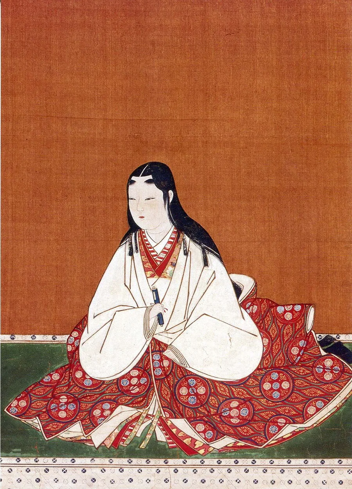

お市の方戦国編 其の十
2度の落城を経験した女性がいます。
生涯の要点
- 織田信秀の娘で、信長の妹として生まれました
- とても美しい人だったと伝わります
- 近江（今の滋賀県）の浅井長政に嫁ぎました
- 夫の長政は1570年に信長にそむき、1573年、小谷城が落ちました
- お市は3人の娘とともに城を出ました
- 1582年、本能寺の変で兄の信長が亡くなりました
- 同じ年、織田家の重臣・柴田勝家と再婚しました
- 1583年、勝家は羽柴秀吉と戦って敗れ、お市は越前の北ノ庄城（今の福井市）で勝家とともに自害しました
- 3人の娘は再び城から助け出されました。長女の茶々はのちの淀殿、三女の江はのちの徳川秀忠の妻です
よくある疑問
2度の落城とは？
1度目は1573年、夫・浅井長政の小谷城。2度目は1583年、再婚した柴田勝家の北ノ庄城で、このときは勝家とともに自害しました。
娘たちは？
3人の娘は、2度とも城から助け出されました。長女の茶々はのちの淀殿、三女の江はのちの徳川秀忠の妻です。

お市の方像（高野山持明院所蔵）
60秒で見る
60秒の動画は
11月25日 20時に公開します
11月25日 20時に公開します
出典と画像
参考：コトバンク「小谷方」「お市の方」（日本大百科全書・改訂新版 世界大百科事典・デジタル版 日本人名大辞典+Plus）
肖像：お市の方像（高野山持明院所蔵）／Wikimedia Commons／パブリックドメイン
写真：北ノ庄城址（柴田神社） 撮影 先従隗始／Wikimedia Commons／CC0
動画のナレーション：VOICEVOX:青山龍星